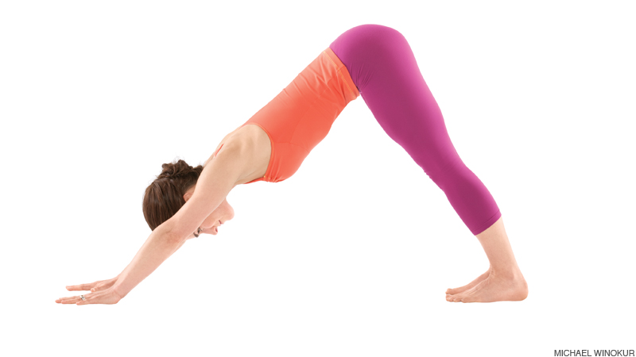

Just Keep Spinning
January 27, 2016
When it came to exploring Enumerables this week, I had to choose one near and dear to my heart: #cycle.
For those of you unfamiliar with the cult phenomenon that is indoor cycling, I'll explain. You get on a stationary bike inches away from other sweaty humans in a dark room with fluorescent lighting, and push down as hard as you can on the pedals to spin to the beat of the music. I have a love/hate relationship with it. It can be pure torture fighting to push down on pedals that don't even move your bike an inch.
Let's use this understanding of cycling to understand the #cycle enumerable. More specifically, the dictionary definition for cycle is: "any complete round or series of occurrences that repeats or is repeated." Okay, so it seems like calling the cycle method will carry out the same action over and over until it is told to stop. This reminds me of other iterators like the .each method - so what's the difference?
The each iterator allows you to do the same thing to each object in your array once. Cycle allows you to do the same thing to each object in your array a certain number of times. Let's investigate.
Keeping with the exercise theme, I'm going to create an array of yoga poses. In yoga, you cycle through a series of poses. We're going to explore the array "yoga_poses":
yoga_poses = ["downward dog", "child's pose", "happy baby", "tree", "dolphin"]
Pretend your yoga instructor is communicating with your class using only Ruby code. To tell you to do each pose once (maybe this is a warm-up), she says:
yoga_poses.each {|pose| puts pose }
=>downward dog
child's pose
happy baby
tree
dolphin
Here we're going through each pose in the array and putsing it to the screen. This is why we see each pose listed out.
How is #cycle different?
Calling one cycle on your array looks a lot like what we saw with .each:
yoga_poses.cycle(1) {|pose| puts pose }
=>downward dog
child's pose
happy baby
tree
dolphin
That 1 inside the ( ) is saying "cycle through this one time". If you call cycle with nothing inside the ( ), the method will cycle forever, which is called an infinite loop. This will break your program - so don't forget to put those in there! This is like a spinning instructor saying "keep cycling" without telling you for how long. When this happens to me, my legs break just like the program would, and I never return to that instructor's class again. But, if the instructor tells you exactly how many times you have to do something and when you'll be finished, you know exactly when to stop. Let's tell our method to cycle through our yoga poses 3 times.
yoga_poses.cycle(3) {|pose| puts pose }
=>downward dog
child's pose
happy baby
tree
dolphin
downward dog
child's pose
happy baby
tree
dolphin
downward dog
child's pose
happy baby
tree
dolphin
Catch how the poses repeated 3 times? Here we're going through 3 cycles of iterating through each pose and putsing it to the screen. This is not possible with .each.
Bottom Line:
Cycle is a lot like each, except you can execute the code block however many times you want by specifying the number in (parentheses). If you DON'T specify the number of cycles and forget the argument, your program will break because it will continue to cycle forever.